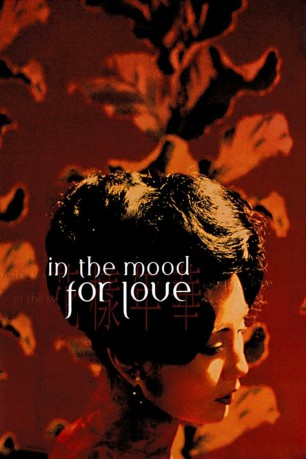

#6883 In the Mood for Love - Der Klang der Liebe
Alternativ: In the Mood for Love (Englischer Titel)
 
 IMDB-Wertung: 8.1 / 10
IMDB-Wertung: 8.1 / 10  IMDB-TOP-Platzierung: 231
IMDB-TOP-Platzierung: 231  Metascore: 0
Metascore: 0 
Melancholische Geschichte der Liebe zwischen einer Frau und einem Mann, die im selben Gebäude wohnen und eines Tages herausfinden, dass ihre Ehepartner eine Affäre miteinander haben. Immer häufiger begegnen sich die beiden in ihrem Alltag, bis sie feststellen, dass sie nicht nur die Einsamkeit in der Ehe teilen, sondern auch ihre Leidenschaft für Kung-Fu Geschichten.
Jahr: 2000
Dauer: 93 Minuten
FSK: 6
Land: Hong-Kong Studio: Prokino FilmverleihTonspuren:
Untertitel:
Auflösung: SD (640x392) Größe: 752 MB
Genre: Drama, Liebe
Regisseur: Kar-Wai Wong
Drehbuch: Kar-Wai Wong
Soundtrack:
Darsteller:
 Maggie Cheung als Su Li-zhen - Mrs. Chan
Maggie Cheung als Su Li-zhen - Mrs. Chan Tony Chiu-Wai Leung als Chow Mo-wan
Tony Chiu-Wai Leung als Chow Mo-wan- Rebecca Pan als Mrs. Suen
 Roy Cheung als Mr. Chan
Roy Cheung als Mr. Chan- Ping Lam Siu als Ah Ping
 Tung Cho 'Joe' Cheung als Man living in Mr. Koo's apartment
Tung Cho 'Joe' Cheung als Man living in Mr. Koo's apartment- Kelly Lai Chen als Mr. Ho
- Man-Lei Chan als Mr. Koo
 Szu-Ying Chien als Amah
Szu-Ying Chien als Amah- Paulyn Sun als Mrs. Chow
- Po-chun Chow als
- Kam-Wah Koo als
- Hsien Yu als
- Julien Carbon als French tourist , uncredited
- Laurent Courtiaud als French reporter , uncredited
Datei: X:\HD-Eastern-Modern(A-M)\In the Mood for Love - Der Klang der Liebe (2000, FSK6, 640x392).mkv seit 06.09.2017
Festplatte: HD Eastern+Western
 Es gibt insgesamt 104 Filme in der Gruppe 'HD-Eastern-Modern(A-M)'
Es gibt insgesamt 104 Filme in der Gruppe 'HD-Eastern-Modern(A-M)'